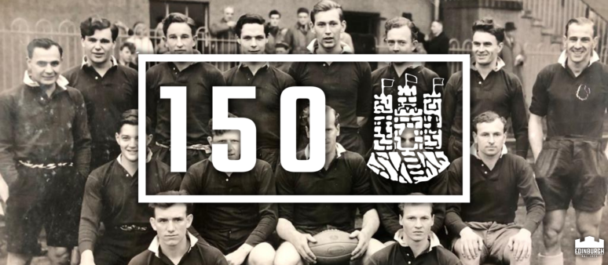

The original Edinburgh District team played the first ever inter-district match against Glasgow District in 1872, winning the match 3–0. The amateur district team was reformed with professionalism, as Edinburgh Rugby, in 1996 to compete in the Heineken Cup, its best performance coming in the 2011–12 season, when the club reached the semi-final but lost out narrowly to Ulster, 22–19. The quarter-final tie against Toulouse attracted a club record crowd of over 38,000 spectators to Murrayfield. In 2003–04 Edinburgh became the first Scottish team to reach the quarter-finals.[2][3][4] In the 2014–15 season, Edinburgh became the first Scottish club to reach a major European final, when they met Gloucester Rugby in the European Rugby Challenge Cup showpiece at Twickenham Stoop in London.
 Visit the homepage! Visit the Players page!